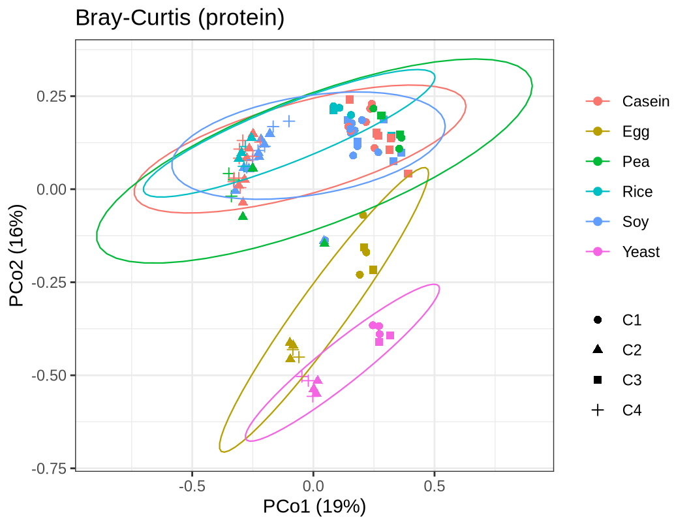
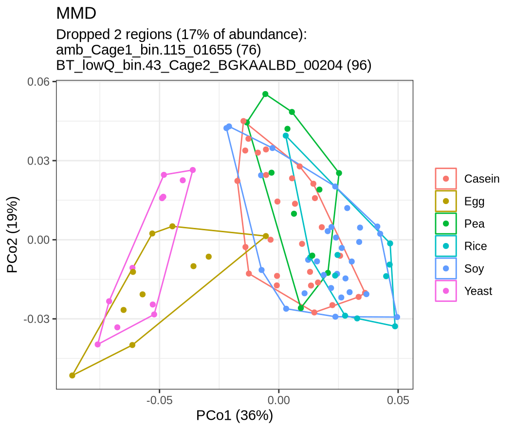
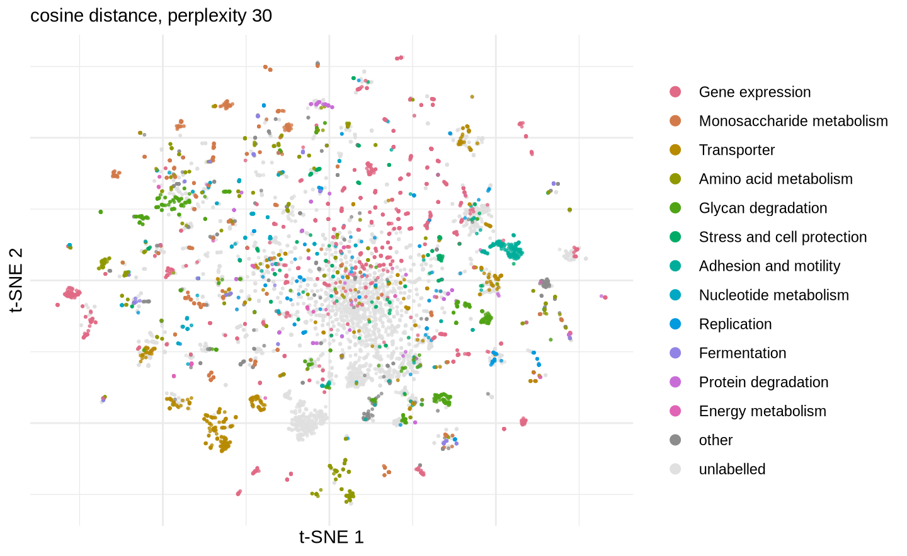
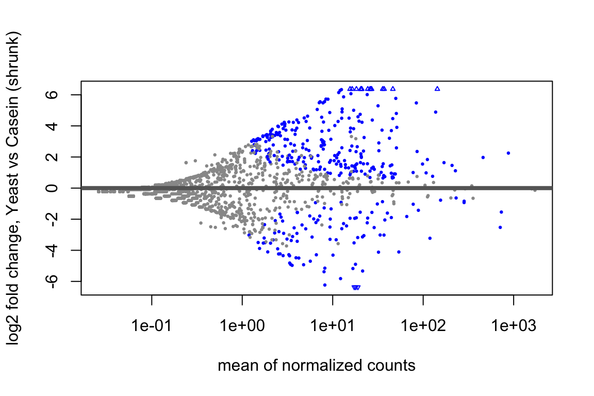
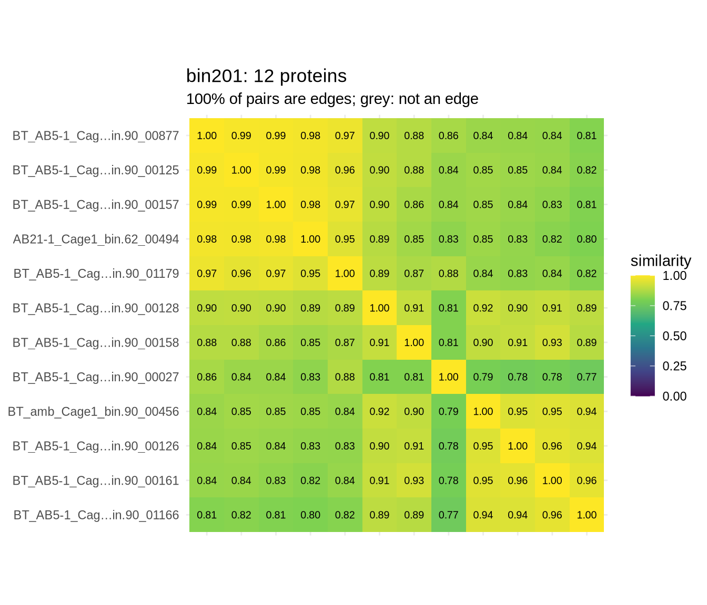
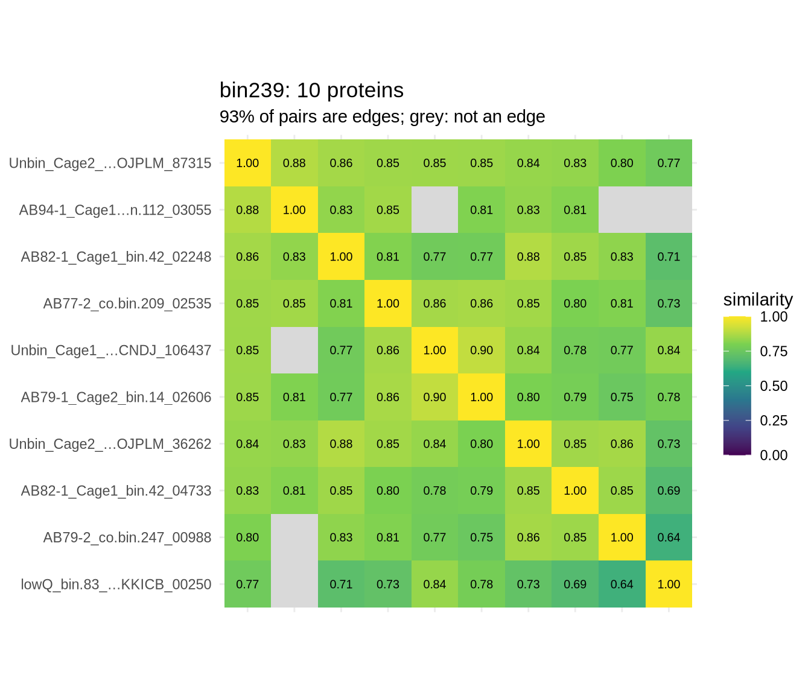

This page runs the repdist workflow on a published
metaproteome: beta diversity with MMD (sample_mmd(), the
maximum mean discrepancy under a Gaussian kernel on the protein
embeddings), the representation space, MCL bins, and bin-level
differential abundance.
library(repdist)
library(ggplot2)
library(vegan)Blakeley-Ruiz et al. (Blakeley-Ruiz et al. 2025) fed twelve mice, four cages of three, a series of defined diets, one week each, and measured faecal metaproteomes by spectral counting (PRIDE PXD041586). The males (C1, C3) and females (C2, C4) came from different rooms at the Jackson Laboratory, so sex also marks two starting microbiomes, which the paper calls mouse groups.
The input sequences are already sequence-reduced. The microbial protein catalog comes from metagenome-assembled genomes annotated with PROKKA; unbinned genes were added only if no binned gene matched them at 90% identity (CD-HIT-2D), and the host and diet reference proteomes were clustered at 95% identity. Every reported protein also has at least one protein-unique peptide. Near-identical proteins are therefore rare in the table (see sequence identity of graph edges): the relatedness that MMD and the bins add beyond protein identity is mostly remote homology.
Beta diversity compares the six dietary protein sources (soy, casein, rice, yeast, pea and egg) across the series. The bins and differential abundance compare two diets of the same protein amount, 20% yeast protein (Yeast) against 20% casein (Casein), casein being the reference protein of the series, in the 11 mice sampled on both. Diets were fed in a fixed order, one week each, so protein source is partly confounded with feeding week.
Data. The input file is curated/diet_series.rds
(42 MB), in the repository’s curated/
folder on the gh-pages branch. To run the code on this
page, save it in a curated/ folder next to your working
directory.
It is not part of the package; the package’s
inst/extdata/metaproteomics.* files, used in its help-page
examples, are a 100-protein cut of the same study.
d <- readRDS(file.path("curated", "diet_series.rds"))
proteins <- d$proteins # sequences with TM-Vec embeddings
counts <- d$counts # raw PSM counts, samples x proteins
samples <- d$samples
ann <- d$annotation
table(samples$diet)
#>
#> T0 20SOY 20CAS 20RIC 40SOY 20YST 40CAS 20PEA 20EGG CTL
#> 12 12 12 10 11 11 11 11 10 11The curated object was built by data-raw/diet_series.R
from the paper’s supplementary Data Set 1 (PSM counts and sequences) and
Data Set 6 (annotation): every microbial protein with at least one PSM
in any sample, its species group and GTDB lineage, the study’s curated
function, KEGG orthology (KO) assignments and CAZy families, and a
TM-Vec embedding computed with embed_proteins().
Protein length. Proteins longer than
MAX_AA = 1500 residues were removed before embedding: 424
of 30103 proteins, carrying 3.2% of the PSMs. This is an analysis
choice, not a package limit: embed_proteins() embeds
sequences of any length, but the TM-Vec head was trained on chains of up
to 1000 residues, so predicted TM-scores for much longer chains are
extrapolations.
c(samples = nrow(counts), proteins = ncol(counts))
#> samples proteins
#> 111 29679The samples are named by diet token (percentage and protein source).
The T0 baseline on standard chow is left out. The 40% soy
and 40% casein weeks count under their protein source, and so does the
CTL re-feeding at the end of the series: 20% soy in cages
C1 and C2, 20% casein in C3 and C4.
token <- as.character(samples$diet)
protein_source <- unname(c(SOY = "Soy", CAS = "Casein", RIC = "Rice",
YST = "Yeast", PEA = "Pea", EGG = "Egg")[sub("^[0-9]+", "", token)])
ctl <- token == "CTL"
protein_source[ctl] <- ifelse(samples$cage[ctl] %in% c("C1", "C2"), "Soy",
"Casein")
md <- data.frame(diet = protein_source,
dose = ifelse(startsWith(token, "40"), "40", "20"),
cage = samples$cage, subject = samples$subject,
# the stopped chicken-bone week elapsed before CTL
week = ifelse(ctl, 10L, samples$period),
row.names = samples$sample)[token != "T0", ]
md$diet <- factor(md$diet)
md$dose <- factor(md$dose)
md <- droplevels(md)
table(md$diet, md$dose)
#>
#> 20 40
#> Casein 17 11
#> Egg 10 0
#> Pea 11 0
#> Rice 10 0
#> Soy 18 11
#> Yeast 11 0PSM totals differ between samples, and sampling depth changes which proteins are observed. For this case study, both distances use the same counts rarefied to the smallest sample, followed by relative-abundance normalisation. Rarefaction standardises the number of observed PSMs but discards counts and adds sampling variability; it is an analysis choice, not a requirement of MMD. It does not recover undetected proteins or remove all effects of the observation process.
range(rowSums(counts[rownames(md), ]))
#> [1] 5441 39491
set.seed(1)
rarefied <- rrarefy(counts[rownames(md), ], min(rowSums(counts[rownames(md), ])))
rarefied <- rarefied[, colSums(rarefied) > 0]
relative <- rarefied / rowSums(rarefied)
D <- list(
`Bray-Curtis (protein)` = vegdist(relative, "bray"), # shared accessions
MMD = sample_mmd(relative, proteins) # distance between embeddings
)PERMANOVA (Anderson 2001) tests protein source after protein amount, cage and week, and PERMDISP (Anderson 2006) tests for unequal spread between sources; both use 999 permutations restricted to within mouse. Cage nests sex.
The table reports sequential R² and the p values returned by
adonis2(). Cage R² is reported descriptively. Because every
mouse stays in one cage, within-mouse permutations preserve cage
membership; the printed cage p value is not interpreted as a test of a
between-cage effect. The numeric week term adjusts for a linear time
trend only. Diets were fed in a fixed order, so the diet association
cannot be separated from arbitrary changes over time.
perm <- permute::how(blocks = md$subject, nperm = 999)
permanova <- lapply(D, function(Dk) {
set.seed(1)
as.data.frame(adonis2(Dk ~ dose + cage + week + diet, data = md,
by = "terms", permutations = perm))
})
permdisp <- vapply(D, function(Dk) {
set.seed(1)
permutest(betadisper(Dk, md$diet), permutations = perm)$tab[1, "Pr(>F)"]
}, numeric(1))
options(knitr.kable.NA = "")
knitr::kable(permanova[["Bray-Curtis (protein)"]], digits = 3,
caption = "Bray-Curtis (protein)")| Df | SumOfSqs | R2 | F | Pr(>F) | |
|---|---|---|---|---|---|
| dose | 1 | 0.675 | 0.022 | 3.877 | 0.001 |
| cage | 3 | 5.792 | 0.191 | 11.088 | 0.001 |
| week | 1 | 0.906 | 0.030 | 5.205 | 0.001 |
| diet | 5 | 7.617 | 0.251 | 8.749 | 0.001 |
| Residual | 88 | 15.322 | 0.505 | ||
| Total | 98 | 30.312 | 1.000 |
knitr::kable(permanova$MMD, digits = 3, caption = "MMD")| Df | SumOfSqs | R2 | F | Pr(>F) | |
|---|---|---|---|---|---|
| dose | 1 | 0.009 | 0.032 | 6.157 | 0.001 |
| cage | 3 | 0.045 | 0.154 | 9.947 | 0.001 |
| week | 1 | 0.011 | 0.037 | 7.187 | 0.001 |
| diet | 5 | 0.094 | 0.322 | 12.458 | 0.001 |
| Residual | 88 | 0.133 | 0.455 | ||
| Total | 98 | 0.291 | 1.000 |
round(permdisp, 3) # PERMDISP p
#> Bray-Curtis (protein) MMD
#> 0.001 0.554Under Bray-Curtis, ellipses are 95% ellipses per protein source (multivariate t).
e <- cmdscale(D[["Bray-Curtis (protein)"]], k = 2, eig = TRUE)
rel <- 100 * e$eig / sum(e$eig[e$eig > 0])
ord <- data.frame(PCo1 = e$points[, 1], PCo2 = e$points[, 2],
diet = md$diet, cage = md$cage)
ggplot(ord, aes(PCo1, PCo2, colour = diet, shape = cage)) +
geom_point(size = 1.8) +
stat_ellipse(aes(group = diet), linewidth = 0.4) +
labs(x = sprintf("PCo1 (%.0f%%)", rel[1]),
y = sprintf("PCo2 (%.0f%%)", rel[2]), colour = NULL, shape = NULL,
title = "Bray-Curtis (protein)") +
theme_bw()
The MMD plot comes from plot_pcoa(), which leaves out
the two most abundant protein regions, named in its subtitle, before the
PCoA. Their share varies with things other than diet, so the plot is
less crowded without them. This is for display only: the PERMANOVA above
uses the full distance. Each source is outlined by its convex hull.
plot_pcoa(relative, proteins, md$diet, drop = 2) + ggplot2::ggtitle("MMD")
Both distances detect protein source. MMD attributes more of the variation to it than protein-level Bray-Curtis does (R² 0.322 against 0.251), and only Bray-Curtis also shows unequal spread between sources (PERMDISP p 0.001 against 0.554), so the MMD separation is mainly a shift in location.
The sequential R² assigned to cage is smaller under MMD (R² 0.154 against 0.191). This is a descriptive comparison of the two distance spaces. In the ordination, the first Bray-Curtis axis separates C1 and C3 from C2 and C4, while the first MMD axis separates yeast and egg from the other sources.
To see what separates the mouse groups, the next chunk sets aside proteins seen in only one group and finds each one’s nearest protein in the other group by TM-Vec similarity.
group <- ifelse(md$cage %in% c("C1", "C3"), "A", "B")
psm <- rowsum(counts[rownames(md), ], group)
mine <- ifelse(psm["B", ] == 0, "A", ifelse(psm["A", ] == 0, "B", "shared"))
group_private <- c(A = sum(psm["A", mine == "A"]) / sum(psm["A", ]),
B = sum(psm["B", mine == "B"]) / sum(psm["B", ]))
# nearest protein seen in the other group, for a PSM-weighted sample of 300
# group-private proteins per group
Z <- S4Vectors::mcols(proteins)$embedding
Z <- Z / sqrt(rowSums(Z^2))
seqs <- proteins
S4Vectors::mcols(seqs) <- NULL
set.seed(1)
nn <- do.call(rbind, lapply(c("A", "B"), function(g) {
own <- which(mine == g)
other <- which(psm[setdiff(c("A", "B"), g), ] > 0)
i <- sample(own, 300, prob = psm[g, own])
cs <- Z[i, ] %*% t(Z[other, ])
j <- other[max.col(cs, "first")]
aln <- pwalign::pairwiseAlignment(seqs[i], seqs[j],
substitutionMatrix = "BLOSUM62", type = "local",
gapOpening = 11, gapExtension = 1)
data.frame(group = g, tm = apply(cs, 1, max),
identity = pwalign::pid(aln, type = "PID1"))
}))
round(prop.table(table(cut(nn$identity, c(0, 30, 50, 70, 90, 100.01),
right = FALSE, labels = c("<30%", "30-50%", "50-70%", "70-90%",
">=90%")))), 3)
#>
#> <30% 30-50% 50-70% 70-90% >=90%
#> 0.178 0.278 0.233 0.238 0.072The two mouse groups, A (C1, C3) and B (C2, C4), carry different variants of the same protein families. Proteins seen in one group only hold 24% of A’s and 12% of B’s PSMs, and their nearest protein in the other group is a same-fold homolog (median predicted TM-score 0.97) at under 90% identity in 93% of cases. Bray-Curtis counts these as different proteins and MMD counts them as close.
From here on the page uses the 11 mice sampled on both 20% casein and 20% yeast, and the proteins seen in those 22 samples.
yc <- samples$diet %in% c("20CAS", "20YST")
yc <- yc & samples$subject %in% names(which(table(samples$subject[yc]) == 2))
samples <- droplevels(samples[yc, ])
samples$diet <- factor(ifelse(samples$diet == "20YST", "Yeast", "Casein"),
c("Casein", "Yeast"))
counts <- counts[yc, ]
counts <- counts[, colSums(counts) > 0]
proteins <- proteins[colnames(counts)]
ann <- ann[colnames(counts), ]
c(samples = nrow(counts), proteins = ncol(counts))
#> samples proteins
#> 22 11043plot_tsne() maps the contrast’s proteins by cosine
distance (one minus the predicted TM-score), coloured by the study’s
manually curated broad function; proteins without one are grey. The map
shows neighbourhoods in representation space; it is not evidence of
function, and t-SNE does not preserve distances between groups.
set.seed(1)
# 2-D map of the protein embeddings, coloured by broad function
plot_tsne(proteins, color = setNames(ann$broad_function, ann$protein))
The study assigned a KO to 79% of the proteins. Proteins without a KO have fewer close relatives in the catalog: the quartiles of each protein’s nearest-neighbour predicted TM-score, by KO status:
ko_status <- ifelse(is.na(ann$ko), "no KO", "KO assigned")
Z <- S4Vectors::mcols(proteins)$embedding
Z <- Z / sqrt(rowSums(Z^2))
sim <- tcrossprod(Z)
diag(sim) <- NA
nearest <- apply(sim, 1, max, na.rm = TRUE)
rm(sim)
tapply(nearest, ko_status, quantile, probs = c(0.25, 0.5, 0.75))
#> $`KO assigned`
#> 25% 50% 75%
#> 0.9051613 0.9738379 0.9949341
#>
#> $`no KO`
#> 25% 50% 75%
#> 0.7800650 0.8554373 0.9247886The similarity graph and MCL bins use the package defaults: an edge needs a local alignment with an E-value of at most 0.01, its weight is the predicted TM-score, and MCL inflation is 2. Aligning every pair of these proteins is the slow step of this page.
# similarity graph: pairs whose alignment has E <= 0.01, weighted by TM-score
S <- protein_similarity(proteins, n_cores = BiocParallel::multicoreWorkers())
bins <- bin_proteins(S) # MCL clusters of that graph
bins$graph
#> proteins edges isolated components
#> 11043 162418 1364 1908
#> largest_component
#> 6761
sizes <- lengths(bins$clusters)
c(proteins = length(proteins), bins = length(sizes),
singleton_bins = sum(sizes == 1),
singleton_fraction = round(sum(sizes == 1) / length(proteins), 3))
#> proteins bins singleton_bins singleton_fraction
#> 11043.000 2464.000 1364.000 0.124
table(cut(sizes, c(0, 1, 2, 5, 10, 50, Inf),
labels = c("1", "2", "3-5", "6-10", "11-50", ">50")))
#>
#> 1 2 3-5 6-10 11-50 >50
#> 1364 326 359 193 205 17The 11043 proteins form 1908 connected components, the largest with 6761 proteins; MCL splits the components into 2464 bins, 1364 of them singletons.
A random sample of 5,000 graph edges, aligned as in
protein_similarity() (local, BLOSUM62), by percent
identity:
set.seed(1)
ij <- which(upper.tri(S) & S > 0, arr.ind = TRUE)
ij <- ij[sample(nrow(ij), 5000), ]
seqs <- proteins
S4Vectors::mcols(seqs) <- NULL
aln <- pwalign::pairwiseAlignment(seqs[ij[, 1]], seqs[ij[, 2]],
substitutionMatrix = "BLOSUM62", type = "local",
gapOpening = 11, gapExtension = 1)
identity <- pwalign::pid(aln, type = "PID1")
round(prop.table(table(cut(identity, c(0, 30, 40, 50, 70, 90, 100.01),
right = FALSE, labels = c("<30%", "30-40%", "40-50%", "50-70%",
"70-90%", ">=90%")))), 3)
#>
#> <30% 30-40% 40-50% 50-70% 70-90% >=90%
#> 0.443 0.228 0.115 0.141 0.066 0.006The median edge joins proteins at 32% identity, and 44% of the edges are below 30%: remote homologs that a 30%-identity sequence clustering would not group.
Raw (unrarefied) protein counts are summed to bins with
bin_glom(). Each sample’s bin counts, plus a pseudo count
of 1, are put on the centred log-ratio (CLR) scale (Aitchison
1982), and each bin seen in at least 10% of samples is tested
with a linear model ~ subject + diet, which pairs the two
samples of each mouse. LFC is the log2 fold change of Yeast over Casein;
q is the Benjamini-Hochberg adjusted p-value.
bin_counts <- bin_glom(counts, bins) # sum protein counts within each bin
clr <- log2(bin_counts + 1)
clr <- clr - rowMeans(clr) # centred log-ratio within each sample
seen <- colMeans(bin_counts > 0) >= 0.1
fit <- t(apply(clr[, seen], 2, function(y) {
summary(lm(y ~ subject + diet, data = samples))$coefficients[
"dietYeast", c("Estimate", "Pr(>|t|)")]
}))
res <- data.frame(LFC = fit[, 1], p = fit[, 2],
q = p.adjust(fit[, 2], "BH"), mean_clr = colMeans(clr[, seen]),
row.names = rownames(fit))
c(tested = nrow(res), up_yeast = sum(res$q < 0.05 & res$LFC > 0),
up_casein = sum(res$q < 0.05 & res$LFC < 0))
#> tested up_yeast up_casein
#> 1246 354 311The MA plot shows each bin’s LFC against its mean CLR; bins with q < 0.05 are coloured.
ggplot(res, aes(mean_clr, LFC, colour = q < 0.05)) +
geom_point(size = 0.8) +
scale_colour_manual(values = c(`FALSE` = "grey60", `TRUE` = "firebrick"),
name = "q < 0.05") +
labs(x = "mean CLR (log2)", y = "LFC, Yeast vs Casein") +
theme_bw()
Each bin’s annotation summarises its members. A label shared by every
annotated member is shown with its count (3/4 means three
of four members carry it, the fourth is unannotated); bins whose
annotated members disagree are marked mixed with the number
of distinct labels and the most frequent one.
summarise_labels <- function(v) {
n <- length(v)
v <- v[!is.na(v)]
if (!length(v)) return("-")
tab <- sort(table(v), decreasing = TRUE)
top <- sprintf("%s (%d/%d)", strtrim(names(tab)[1], 40), tab[[1]], n)
if (length(tab) == 1L) top else
sprintf("mixed, %d: %s", length(tab), top)
}
bin_table <- function(ids) {
data.frame(
bin = ids,
proteins = sizes[ids],
taxon = vapply(bins$clusters[ids],
function(m) summarise_labels(ann[m, "taxon"]), ""),
`function` = vapply(bins$clusters[ids],
function(m) summarise_labels(ann[m, "consensus_annotation"]), ""),
KO = vapply(bins$clusters[ids],
function(m) summarise_labels(ann[m, "ko"]), ""),
LFC = round(res[ids, "LFC"], 2),
p = formatC(res[ids, "p"], format = "e", digits = 1),
q = formatC(res[ids, "q"], format = "e", digits = 1),
check.names = FALSE, row.names = NULL
)
}
sig <- rownames(res)[res$q < 0.05]
sig <- sig[order(res[sig, "p"])]
up_yeast <- sig[res[sig, "LFC"] > 0]
up_casein <- sig[res[sig, "LFC"] < 0]
# the bin holding most of the study's GH92 proteins
gh92 <- names(which.max(table(bins$membership[grepl("GH92", ann$cazy)])))
gh92_members <- bins$clusters[[gh92]]The ten most significant bins higher on the yeast diet:
knitr::kable(bin_table(head(up_yeast, 10)))| bin | proteins | taxon | function | KO | LFC | p | q |
|---|---|---|---|---|---|---|---|
| bin201 | 12 | mixed, 2: Bacteroides thetaiotaomicron (11/12) | GH92 family glycosyl hydrolase (12/12) | - | 8.09 | 2.7e-14 | 3.4e-11 |
| bin1893 | 1 | Bacteroides thetaiotaomicron (1/1) | glucosylceramidase 1 (1/1) | K01201 (1/1) | 5.57 | 7.0e-13 | 4.4e-10 |
| bin1891 | 1 | Bacteroides thetaiotaomicron (1/1) | Catalyzes the attachment of valine to tR (1/1) | - | 5.39 | 1.8e-12 | 7.5e-10 |
| bin1921 | 1 | Bacteroides thetaiotaomicron (1/1) | - | - | 4.65 | 2.9e-12 | 8.4e-10 |
| bin661 | 3 | Bacteroides thetaiotaomicron (3/3) | - | - | 5.31 | 4.1e-12 | 8.4e-10 |
| bin662 | 3 | Bacteroides thetaiotaomicron (3/3) | - | K12035 (2/3) | 6.13 | 4.3e-12 | 8.4e-10 |
| bin1875 | 1 | Bacteroides thetaiotaomicron (1/1) | - | - | 6.11 | 4.7e-12 | 8.4e-10 |
| bin1890 | 1 | Bacteroides thetaiotaomicron (1/1) | - | - | 5.27 | 1.1e-11 | 1.8e-09 |
| bin450 | 5 | Bacteroides thetaiotaomicron (5/5) | - | K20610 (2/5) | 4.45 | 6.0e-11 | 8.4e-09 |
| bin509 | 4 | mixed, 4: Acetatifactor sp. AB77-2 (1/4) | diaminopimelate dehydrogenase (4/4) | K03340 (4/4) | 4.47 | 7.0e-11 | 8.7e-09 |
bin201, ranked 1 of the 354 yeast-enriched bins, holds 12 proteins, 12 of them GH92 family glycosyl hydrolases (α-mannosidases) in the study’s annotation, almost all from B. thetaiotaomicron. The source study reported these enzymes increasing on the yeast diet and linked them to the mannan of yeast cell-wall glycoproteins (Blakeley-Ruiz et al. 2025). None of its members carry a KO, so a KO-level summary would not have grouped them.
The ten most significant bins higher on the casein diet:
knitr::kable(bin_table(head(up_casein, 10)))| bin | proteins | taxon | function | KO | LFC | p | q |
|---|---|---|---|---|---|---|---|
| bin1636 | 1 | Romboutsia ilealis (1/1) | - | - | -4.97 | 1.7e-09 | 1.3e-07 |
| bin1127 | 1 | Dorea sp. AB106-1 (1/1) | D-proline reductase (1/1) | K10794 (1/1) | -2.02 | 9.5e-09 | 4.4e-07 |
| bin1622 | 1 | Romboutsia ilealis (1/1) | - | - | -4.79 | 2.5e-08 | 9.3e-07 |
| bin239 | 10 | mixed, 5: Acetatifactor sp. AB82-1 (2/10) | - | K19630 (1/10) | -4.92 | 2.8e-08 | 9.8e-07 |
| bin595 | 3 | mixed, 3: Bacteroides thetaiotaomicron (1/3) | 2-dehydropantoate 2-reductase (3/3) | K00077 (3/3) | -3.64 | 2.9e-08 | 9.9e-07 |
| bin469 | 5 | mixed, 3: Bacteroides thetaiotaomicron (1/5) | mixed, 2: Putative sugar phosphate isomerase YwlF (3/5) | mixed, 2: K01808 (4/5) | -2.25 | 6.6e-08 | 1.8e-06 |
| bin381 | 6 | mixed, 4: Alistipes sp002428825 (2/6) | Glycoside hydrolase GH76 (1/6) | K21571 (6/6) | -3.44 | 1.3e-07 | 3.1e-06 |
| bin121 | 17 | mixed, 11: Paramuribaculum sp. AB20-1 (2/17) | Lacto-N-biosidase (1/17) | mixed, 6: K25603 (2/17) | -4.42 | 2.1e-07 | 4.3e-06 |
| bin155 | 14 | mixed, 7: Staphylococcus nepalensis (3/14) | mixed, 3: Acetylornithine aminotransferase (9/14) | mixed, 4: K00821 (9/14) | -2.56 | 3.6e-07 | 6.7e-06 |
| bin389 | 6 | Lawsonibacter sp. AB62-6 (4/6) | - | - | -3.81 | 5.2e-07 | 9.1e-06 |
Several casein-enriched bins are large and mixed across taxa. The largest in the table, bin121, holds 17 proteins from 11 taxa. 7 of them carry a KO, spread over 6 distinct KOs; the most frequent, K25603, covers 2. A bin like this summarises a family of related proteins shared by many organisms, not one organism’s protein, and its members’ functions agree less than in a small bin.
plot_bin_similarity() shows the edges among one bin’s
members. A coloured cell is an edge of the graph: the pair’s alignment
passed the E-value gate, and the colour is the edge’s weight, its
predicted TM-score. A grey cell is not an edge (weight 0 in
S): its alignment failed the gate, and the pair is in the
bin only through shared neighbours. MCL clusters along the edges. Shown
are the most significant bin with 4 to 30 members in each direction,
with a count of their member pairs.
pick <- function(ids) ids[sizes[ids] >= 4 & sizes[ids] <= 30][1]
shown <- c(Yeast = pick(up_yeast), Casein = pick(up_casein))
pair_types <- function(bin) {
m <- bins$clusters[[bin]]
E <- S[m, m] > 0
up <- upper.tri(E)
c(pairs = sum(up), edges = sum(E[up]), not_edges = sum(!E[up]))
}
pair_counts <- data.frame(bin = shown, t(vapply(shown, pair_types, numeric(3))))
pair_counts| bin | pairs | edges | not_edges | |
|---|---|---|---|---|
| Yeast | bin201 | 66 | 66 | 0 |
| Casein | bin239 | 45 | 42 | 3 |
# edge weights (predicted TM-scores) among the bin's members
plot_bin_similarity(bins, shown[["Yeast"]], S)
m <- bins$clusters[[shown[["Yeast"]]]]
knitr::kable(ann[m, c("taxon", "consensus_annotation", "ko", "cazy")],
row.names = TRUE)| taxon | consensus_annotation | ko | cazy | |
|---|---|---|---|---|
| AB21-1_Cage1_bin.62_00494 | UBA7173 sp. AB21-1 | GH92 family glycosyl hydrolase | GH94;GH92 | |
| BT_AB5-1_Cage1_bin.90_00027 | Bacteroides thetaiotaomicron | GH92 family glycosyl hydrolase | 3.2.1.-;GH92 | |
| BT_AB5-1_Cage1_bin.90_00125 | Bacteroides thetaiotaomicron | GH92 family glycosyl hydrolase | GH94;3.2.1.113;GH92 | |
| BT_AB5-1_Cage1_bin.90_00126 | Bacteroides thetaiotaomicron | GH92 family glycosyl hydrolase | GH92 | |
| BT_AB5-1_Cage1_bin.90_00128 | Bacteroides thetaiotaomicron | GH92 family glycosyl hydrolase | GH92 | |
| BT_AB5-1_Cage1_bin.90_00157 | Bacteroides thetaiotaomicron | GH92 family glycosyl hydrolase | GH94;3.2.1.113;GH92 | |
| BT_AB5-1_Cage1_bin.90_00158 | Bacteroides thetaiotaomicron | GH92 family glycosyl hydrolase | GH92 | |
| BT_AB5-1_Cage1_bin.90_00161 | Bacteroides thetaiotaomicron | GH92 family glycosyl hydrolase | GH92 | |
| BT_AB5-1_Cage1_bin.90_00877 | Bacteroides thetaiotaomicron | GH92 family glycosyl hydrolase | GH94;GH92 | |
| BT_AB5-1_Cage1_bin.90_01166 | Bacteroides thetaiotaomicron | GH92 family glycosyl hydrolase | GH92 | |
| BT_AB5-1_Cage1_bin.90_01179 | Bacteroides thetaiotaomicron | GH92 family glycosyl hydrolase | GH94;GH92 | |
| BT_amb_Cage1_bin.90_00456 | Bacteroides thetaiotaomicron | GH92 family glycosyl hydrolase | GH92 |
plot_bin_similarity(bins, shown[["Casein"]], S)
m <- bins$clusters[[shown[["Casein"]]]]
knitr::kable(ann[m, c("taxon", "consensus_annotation", "ko", "cazy")],
row.names = TRUE)| taxon | consensus_annotation | ko | cazy | |
|---|---|---|---|---|
| AB77-2_co.bin.209_02535 | Acetatifactor sp. AB77-2 | |||
| AB79-1_Cage2_bin.14_02606 | Acetatifactor sp. AB79-1 | |||
| AB79-2_co.bin.247_00988 | Acetatifactor sp. AB79-2 | |||
| AB82-1_Cage1_bin.42_02248 | Acetatifactor sp. AB82-1 | K19630 | ||
| AB82-1_Cage1_bin.42_04733 | Acetatifactor sp. AB82-1 | |||
| AB94-1_Cage1_bin.112_03055 | Kineothrix sp. AB94-1 | |||
| lowQ_bin.83_Cage2_PPEKKICB_00250 | ||||
| Unbin_Cage1_FEAPCNDJ_106437 | ||||
| Unbin_Cage2_HKMOJPLM_36262 | ||||
| Unbin_Cage2_HKMOJPLM_87315 |
In bin201, 66 of 66 member pairs are edges; in bin239, 42 of 45. MCL keeps pairs joined only through shared neighbours in one bin: the gate acts on edges, not on every pair.
sessionInfo()
#> R version 4.5.3 (2026-03-11)
#> Platform: x86_64-conda-linux-gnu
#> Running under: Red Hat Enterprise Linux 9.7 (Plow)
#>
#> Matrix products: default
#> BLAS/LAPACK: /gpfs_common/share01/callahanlabbio/yyang55/envs/repdist-site/lib/libopenblasp-r0.3.34.so; LAPACK version 3.12.0
#>
#> locale:
#> [1] LC_CTYPE=en_US.UTF-8 LC_NUMERIC=C
#> [3] LC_TIME=en_US.UTF-8 LC_COLLATE=en_US.UTF-8
#> [5] LC_MONETARY=en_US.UTF-8 LC_MESSAGES=en_US.UTF-8
#> [7] LC_PAPER=en_US.UTF-8 LC_NAME=C
#> [9] LC_ADDRESS=C LC_TELEPHONE=C
#> [11] LC_MEASUREMENT=en_US.UTF-8 LC_IDENTIFICATION=C
#>
#> time zone: America/New_York
#> tzcode source: system (glibc)
#>
#> attached base packages:
#> [1] stats graphics grDevices utils datasets methods base
#>
#> other attached packages:
#> [1] vegan_2.7-5 permute_0.9-10 ggplot2_4.0.4 repdist_0.99.0
#>
#> loaded via a namespace (and not attached):
#> [1] sass_0.4.10 generics_0.1.4 lattice_0.23-1
#> [4] digest_0.6.39 magrittr_2.0.5 evaluate_1.0.5
#> [7] grid_4.5.3 RColorBrewer_1.1-3 fastmap_1.2.0
#> [10] jsonlite_2.0.0 Matrix_1.7-6 mgcv_1.9-4
#> [13] viridisLite_0.4.3 scales_1.4.0 Biostrings_2.78.0
#> [16] codetools_0.2-20 jquerylib_0.1.4 cli_3.6.6
#> [19] rlang_1.3.0 crayon_1.5.3 XVector_0.50.0
#> [22] splines_4.5.3 withr_3.0.3 cachem_1.1.0
#> [25] yaml_2.3.12 Rtsne_0.17 tools_4.5.3
#> [28] parallel_4.5.3 BiocParallel_1.46.0 dplyr_1.2.1
#> [31] BiocGenerics_0.56.0 vctrs_0.7.3 R6_2.6.1
#> [34] stats4_4.5.3 lifecycle_1.0.5 pwalign_1.6.0
#> [37] Seqinfo_1.0.0 S4Vectors_0.48.1 IRanges_2.44.0
#> [40] MASS_7.3-66 cluster_2.1.8.3 pkgconfig_2.0.3
#> [43] pillar_1.11.1 bslib_0.12.0 gtable_0.3.6
#> [46] glue_1.8.1 Rcpp_1.1.2 xfun_0.61
#> [49] tibble_3.3.1 tidyselect_1.2.1 knitr_1.52
#> [52] farver_2.1.2 htmltools_0.5.9 nlme_3.1-170
#> [55] rmarkdown_2.32 labeling_0.4.3 compiler_4.5.3
#> [58] S7_0.2.2